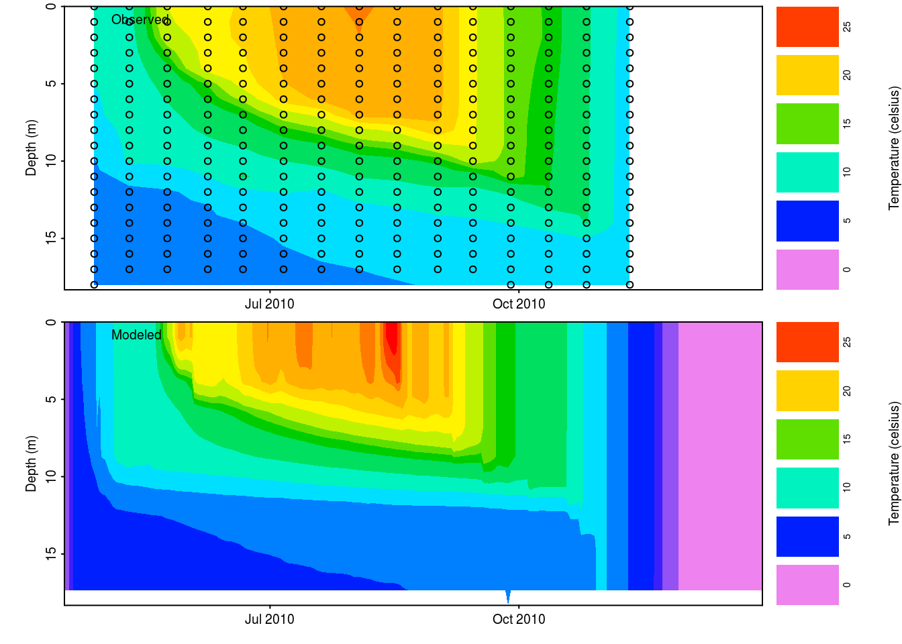
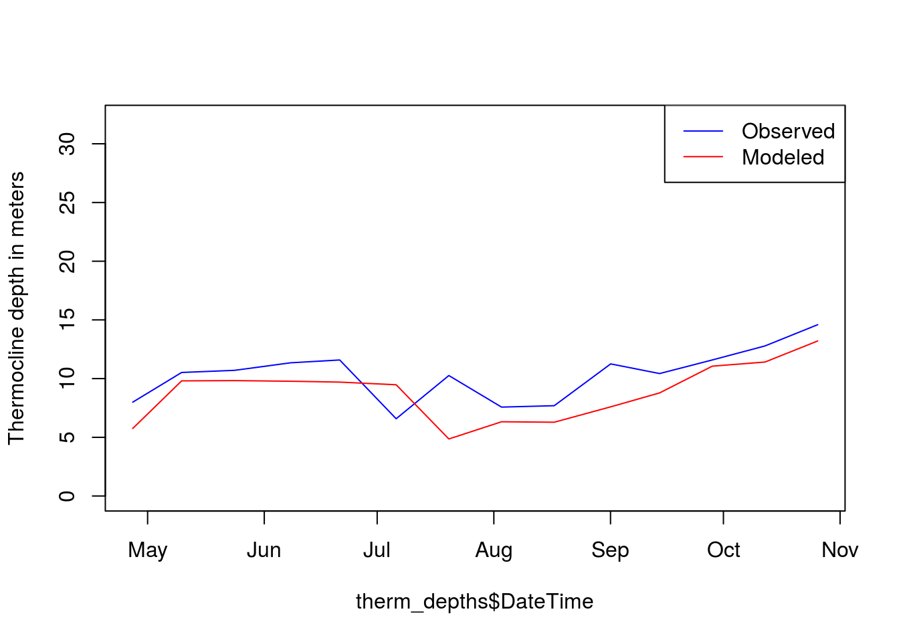

Project EDDIE: Modeling Climate Change Effects on Lakes Using Distributed Computing
Joseph Stachelek
2017-06-22
Project EDDIE is a series of activities entitled and developed by:
Modeling Climate Change Effects on Lakes Using Distributed Computing Module This module was initially developed by Carey, C.C., S. Aditya, K. Subratie, and R. Figueiredo. 1 May 2016. http://cemast.illinoisstate.edu/data-for-students/modules/lake-modeling.shtml (Module development was supported by NSF DEB 1245707 and ACI 1234983).
The following tutorial loosely follows the Project EDDIE steps with the exception of using the built-in run_example_sim function in the glmtools package to complete the initial set-up and file handling. This streamlines setup and avoids manual interaction with system files.
ACTIVITY A
OBJECTIVE 1: Download the GLM files and R packages successfully onto your computer.
Install and load packages
install.packages('sp')
install.packages('glmtools', repos=c('http://cran.rstudio.com', 'http://owi.usgs.gov/R'))library(glmtools)Verify setup
glm_version() ------------------------------------------------
| General Lake Model (GLM) Version 2.2.0rc5 |
------------------------------------------------
--help : show this blurb
--nml <nmlfile> : get parameters from nmlfile
--xdisp : display temp/salt and selected others in x-window
--xdisp <plotsfile> : like --xdisp, but use <plotsfile> instead of plots.nml
--saveall : save plots to png files
--save-all-in-one : save all plots to png file
[1] 0OBJECTIVE 2: Migrate the example files that come with your downloaded GLM files onto a new directory on your computer
File handling
sim_folder <- "data"
dir.create(sim_folder, showWarnings = FALSE)
run_example_sim(sim_folder)## driver data file copied to data/nldas_driver.csv
## writing nml file to data/glm2.nml
## simulation complete.
## *.nc output located in data/output.nc## [1] "data"nml_file <- file.path(sim_folder, "glm2.nml")
nml <- read_nml(nml_file)print(nml)## &glm_setup
## sim_name = 'GLMSimulation'
## max_layers = 480
## min_layer_vol = 0.025
## min_layer_thick = 0.1
## max_layer_thick = 3
## Kw = 0.331
## coef_mix_conv = 0.2
## coef_wind_stir = 0.402
## coef_mix_shear = 0.2
## coef_mix_turb = 0.51
## coef_mix_KH = 0.1
## coef_mix_hyp = 0.2
## /
## &morphometry
## lake_name = 'Sparkling'
## latitude = 32
## longitude = 35
## bsn_len = 21000
## bsn_wid = 13000
## bsn_vals = 15
## H = 301.712, 303.018285714286, 304.324571428571, 305.630857142857, 306.937142857143, 308.243428571429, 309.549714285714, 310.856, 312.162285714286, 313.468571428571, 314.774857142857, 316.081142857143, 317.387428571429, 318.693714285714, 320
## A = 0, 45545.8263571429, 91091.6527142857, 136637.479071429, 182183.305428571, 227729.131785714, 273274.958142857, 318820.7845, 364366.610857143, 409912.437214286, 455458.263571429, 501004.089928571, 546549.916285714, 592095.742642857, 637641.569
## /
## &time
## timefmt = 2
## start = '2010-04-15 00:00:00'
## stop = '2010-12-30 00:00:00'
## dt = 3600
## timezone = 7
## /
## &output
## out_dir = '.'
## out_fn = 'output'
## nsave = 24
## csv_lake_fname = 'lake'
## csv_point_nlevs = 0
## csv_point_fname = 'WQ_'
## csv_point_at = 17
## csv_point_nvars = 2
## csv_point_vars = 'temp','salt','OXY_oxy'
## csv_outlet_allinone = .false.
## csv_outlet_fname = 'outlet_'
## csv_outlet_nvars = 3
## csv_outlet_vars = 'flow','temp','salt','OXY_oxy'
## csv_ovrflw_fname = 'overflow'
## /
## &init_profiles
## lake_depth = 18.288
## num_depths = 3
## the_depths = 0, 0.2, 18.288
## the_temps = 3, 4, 4
## the_sals = 0, 0, 0
## num_wq_vars = 6
## wq_names = 'OGM_don','OGM_pon','OGM_dop','OGM_pop','OGM_doc','OGM_poc'
## wq_init_vals = 1.1, 1.2, 1.3, 1.2, 1.3, 2.1, 2.2, 2.3, 1.2, 1.3, 3.1, 3.2, 3.3, 1.2, 1.3, 4.1, 4.2, 4.3, 1.2, 1.3, 5.1, 5.2, 5.3, 1.2, 1.3, 6.1, 6.2, 6.3, 1.2, 1.3
## /
## &meteorology
## met_sw = .true.
## lw_type = 'LW_IN'
## rain_sw = .false.
## atm_stab = .false.
## catchrain = .false.
## rad_mode = 1
## albedo_mode = 1
## cloud_mode = 4
## subdaily = .false.
## meteo_fl = 'nldas_driver.csv'
## wind_factor = 1
## sw_factor = 1.08
## lw_factor = 1
## at_factor = 1
## rh_factor = 1
## rain_factor = 1
## ce = 0.00132
## ch = 0.0013
## cd = 0.0013
## rain_threshold = 0.01
## runoff_coef = 0.3
## /
## &bird_model
## AP = 973
## Oz = 0.279
## WatVap = 1.1
## AOD500 = 0.033
## AOD380 = 0.038
## Albedo = 0.2
## /
## &inflow
## num_inflows = 0
## names_of_strms = 'Riv1','Riv2'
## subm_flag = .false., .false.
## strm_hf_angle = 65, 65
## strmbd_slope = 2, 2
## strmbd_drag = 0.016, 0.016
## inflow_factor = 1, 1
## inflow_fl = 'inflow_1.csv','inflow_2.csv'
## inflow_varnum = 4
## inflow_vars = 'FLOW','TEMP','SALT','OXY_oxy','SIL_rsi','NIT_amm','NIT_nit','PHS_frp','OGM_don','OGM_pon','OGM_dop','OGM_pop','OGM_doc','OGM_poc','PHY_green','PHY_crypto','PHY_diatom'
## /
## &outflow
## num_outlet = 0
## flt_off_sw = .false.
## outl_elvs = -215.5
## bsn_len_outl = 799
## bsn_wid_outl = 399
## outflow_fl = 'outflow.csv'
## outflow_factor = 0.8
## /
## &snowice
## snow_albedo_factor = 1
## snow_rho_max = 300
## snow_rho_min = 50
## /
## &sed_heat
## sed_temp_mean = 4.5
## sed_temp_amplitude = 0.25
## sed_temp_peak_doy = 242.5
## /Get Parameters of the nml control file
get_nml_value(nml, 'lake_name')## [1] "Sparkling"plot_meteo(nml_file)
OBJECTIVE 4: Examine how your modeled GLM data compares to the observed field data for your lake.
field_path <- file.path(sim_folder, 'field_data.csv')
plot_var_compare(nc_file, field_path, 'temp', resample=FALSE)
List and compare available metrics
sim_metrics(with_nml = FALSE)## [1] "buoyancy.freq" "center.buoyancy" "thermo.depth"
## [4] "water.density" "water.temperature"compare_to_field(nc_file, field_path, metric="thermo.depth",
as_value = TRUE, na.rm = TRUE)## DateTime obs mod
## 1 2010-04-27 01:00:00 7.992360 5.750947
## 2 2010-05-10 01:00:00 10.522474 9.806721
## 3 2010-05-24 01:00:00 10.703003 9.829644
## 4 2010-06-08 01:00:00 11.348012 9.775764
## 5 2010-06-21 01:00:00 11.585997 9.700781
## 6 2010-07-06 01:00:00 6.580984 9.475542
## 7 2010-07-20 01:00:00 10.261094 4.859414
## 8 2010-08-03 01:00:00 7.572742 6.323220
## 9 2010-08-17 01:00:00 7.691791 6.285066
## 10 2010-09-01 01:00:00 11.252144 7.595761
## 11 2010-09-14 01:00:00 10.429662 8.782602
## 12 2010-09-28 01:00:00 11.588422 11.059639
## 13 2010-10-12 01:00:00 12.782920 11.410977
## 14 2010-10-26 01:00:00 14.590728 13.204661Plot modeled versus observed metric values
therm_depths <- compare_to_field(nc_file, field_path,
metric="thermo.depth", as_value = TRUE, na.rm = TRUE)
plot(therm_depths$DateTime, therm_depths$obs,
type = "l", col = "blue", ylim = c(0, 32),
ylab="Thermocline depth in meters")
lines(therm_depths$DateTime, therm_depths$mod, col = "red")
legend("topright",c("Observed", "Modeled"), lty = c(1, 1),
col = c("blue", "red"))
ACTIVITY B
OBJECTIVE 5: Develop a climate change scenario for your model lake
Develop a climate scenario (it can be for any region!)
Create a corresponding meteorological input file. Think through all of the components of the proposed scenario. For example, which of the meteorological variables (air temperature, precipitation, wind, etc.) will be modified and how? Will they be short-term or long-term modifications?
Run the file and examine how it alters the physical structure of the lake. How does your climate scenario change the thermal structure of the lake? What does the temperature profile look like? How does the depth of the thermocline change? How does the timing of stratification and magnitude of evaporation change?
Compare the modeled output to the observed. What are the implications of your climate scenario for future water quality and quantity?
Create a few figures to highlight the results of your climate scenario. It would be helpful to present both the meteorological input file as well as the lake thermal plots so that you can see how the lake responded to your climate forcing.
ACTIVITY C
OBJECTIVE 6: Set up hundreds of GLM simulations with varying input meteorological data
library(GRAPLEr)
library(httr)
library(RCurl)
library(jsonlite)
# setup file system
# basedir <- ""
MyExpRootDir <- file.path(basedir, 'GRAPLE','MyExpRoot')
dir.create(MyExpRootDir, showWarnings = FALSE)
MyResultsDir <- file.path(basedir, 'GRAPLE','MyResults')
dir.create(MyResultsDir, showWarnings = FALSE)
invisible(file.copy("job_desc.json", MyExpRootDir))
# copy files to Experiment Root Directory
run_example_sim("GRAPLE/MyExpRoot")graplerURL <- "https://graple.acis.ufl.edu" # specify web service address for the GRAPLEr.
MyExp <- new("Graple", GWSURL=graplerURL, ExpRootDir=MyExpRootDir, ResultsDir=MyResultsDir,
ExpName="EDDIE", TempDir = tempdir())
MyExp <- GrapleCheckService(MyExp)MyExp <- GrapleRunSweepExperiment(MyExp)
print(MyExp@StatusMsg)
MyExp <- GrapleCheckExperimentCompletion(MyExp)
print(MyExp@StatusMsg)